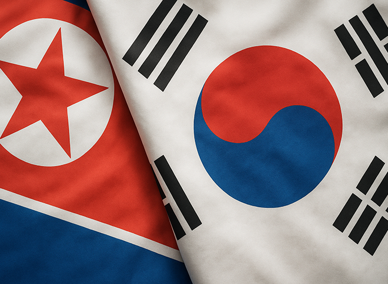

2002년 5월 31일부터 6월 30일까지, 대한민국과 일본은 사상 최초로 FIFA 월드컵을 공동 개최하였습니다. 이는 아시아 대륙에서 최초로 열린 월드컵이자, 두 나라가 공동으로 치른 첫 번째 월드컵이라는 점에서 전 세계적인 주목을 받았습니다. 대한민국은 서울, 부산, 대구, 광주, 인천 등 10개 도시에서 경기를 개최하였으며, 이를 계기로 경기장, 도로, 통신 등 국가 인프라가 대대적으로 정비되었습니다. 대한민국 정부는 1996년 개최권을 확보한 이후 6년간 준비에 매진하였고, 국민의 기대와 관심 또한 그 어느 때보다 높았습니다.
대한민국 축구대표팀은 거스 히딩크 감독의 지휘 아래 대회 전 혹독한 체력 훈련과 조직력 강화 훈련을 거쳤으며, 그 결과는 그야말로 역사적이었습니다. 조별리그에서 폴란드(2:0 승), 미국(1:1 무), 포르투갈(1:0 승)을 상대로 조 1위로 16강에 진출하였고, 16강에서는 이탈리아를, 8강에서는 스페인을 각각 연장전 및 승부차기 끝에 꺾으며 아시아 국가 최초로 월드컵 4강 신화를 이루어냈습니다. 비록 독일에 패해 결승 진출에는 실패했지만, 3·4위전에서 터키와 치열한 접전을 벌이며 최종 4위를 기록하였습니다.
특히 이 대회에서 가장 눈에 띈 것은 '붉은악마'라 불리는 대표팀 응원단의 열정이었습니다. 서울 광화문, 시청광장, 월드컵경기장 등 전국 각지에서 수십만 명이 거리 응원을 펼쳤고, 붉은색 티셔츠와 태극기를 휘날리며 하나 된 응원 열기는 국내는 물론 해외 언론에도 크게 보도되었습니다. "대~한민국!"이라는 응원 구호는 남녀노소를 막론하고 모두의 외침이 되었으며, 그 모습은 대한민국의 단합된 국민정신과 집단 열정을 보여주는 상징으로 남았습니다. 이 열풍은 곧 '월드컵 신드롬'으로 불리며 스포츠를 넘어 문화, 경제 전반에 긍정적인 영향을 끼쳤습니다.
경제적으로도 월드컵은 관광·유통·식음료·전자제품 분야에 큰 활기를 불어넣었습니다. 외국인 관광객이 급증했고, TV 판매량이 급증하는 등 내수 진작 효과도 나타났습니다. 또한 한일 공동개최라는 형식은 과거 역사 문제 등으로 갈등이 깊었던 양국 간의 협력 가능성을 상징적으로 보여준 사례로 평가받습니다. 물론 일본과의 공동개최 과정에서 경기 수 조정, 개최국 개막전 문제 등을 둘러싼 갈등도 있었지만, 결과적으로 대한민국은 훨씬 뛰어난 경기 성적과 응원 문화를 통해 세계적인 주목을 받았습니다.
2002년 한일 월드컵은 단순한 스포츠 이벤트가 아니었습니다. 그것은 국민 통합의 계기이자, 세계 무대에서 대한민국의 저력을 보여준 사건이었습니다. 그해 여름, 대한민국은 붉은 물결로 물들었고, 그 열기와 감동은 시간이 지나도 국민들의 기억 속에 선명히 남아 있습니다.
2002년 12월 19일 치러진 제16대 대통령 선거에서 노무현 후보가 당선되면서 대한민국 정치사에 큰 전환점이 마련되었습니다. 그는 기존의 지역구도나 정치 명문가 출신이 아닌, 노동 및 인권운동을 통해 성장한 정치인이었으며, '서민 출신 대통령', '개혁 대통령'으로서의 상징성을 가졌습니다. 더욱이 노무현 후보는 당내 경선에서도 돌풍을 일으켜 국민참여경선제를 통해 새천년민주당의 대선 후보로 선출되었고, 이후 정몽준 후보와의 단일화, 극적인 지지 철회 등을 거쳐 박빙의 승부 끝에 최종 승리하였습니다.
그의 당선은 무엇보다 '386세대'라 불리는 민주화운동 세대의 정치 참여와 주도권 장악을 상징하는 사건이었습니다. 1980년대 학번, 1960년대 생, 당시 30대였던 이들은 기존 정치권을 비판하고 변화와 개혁을 외쳤으며, 노무현 후보의 정치철학에 깊이 공감하였습니다. 노무현 후보는 기득권 구조를 깨고, 권위주의적 리더십에서 벗어나 수평적 민주주의를 지향하는 대통령으로서의 새로운 상을 제시하였습니다.
당시 대선 과정에서 그는 '지역주의 타파', '정경유착 척결', '부패 정치 청산', '남북 평화 협력', '미국과의 균형 있는 외교' 등을 주요 공약으로 내세웠으며, 이는 기존의 보수적 정치 담론과는 뚜렷하게 다른 방향이었습니다. 실제로 선거 후반에는 '노풍(盧風)'이라 불리는 대중적 열풍이 불었고, 인터넷을 통한 자발적 후원과 유권자 참여 문화는 대한민국 정치의 새로운 패러다임으로 자리 잡았습니다.
노무현 후보의 당선은 전통적으로 보수층의 지지를 받던 경상도 출신임에도 불구하고, 지역주의 구도를 정면으로 거스르며 얻어낸 것이어서 더욱 의미 있었습니다. 그러나 정몽준 후보의 갑작스러운 지지 철회, 투표일 당일의 변수 등은 극적인 선거 양상을 만들었고, 최종적으로 불과 57만 표 차이로 신승을 거두었습니다.
그의 취임과 함께 시작된 참여정부는 개혁과 갈등의 연속이었습니다. 인사 논란, 언론 개혁 추진, 검찰 독립, 한미FTA 추진, 수도 이전 시도, 탈권위주의 상징적 행보 등은 일부에게는 지지를 받았고, 일부에게는 거센 비판을 받았습니다. 그럼에도 불구하고 그의 정치적 유산은 이후 진보 진영의 뿌리가 되었고, 문재인·이재명 등 차세대 정치인의 성장 기반이 되었습니다. 노무현 대통령 당선은 단순한 정권 교체가 아니라, 정치 세대 교체이자, 대한민국 민주주의가 한 단계 성장했음을 알리는 상징적인 사건이었습니다.
2002년 6월 13일, 경기도 양주시 효촌리 인근 도로에서 미 2사단 소속 궤도장갑차가 도로변을 걷고 있던 중학교 2학년생 심미선·신효순 양을 치어 숨지게 하는 비극적인 사건이 발생했습니다. 두 학생은 친구의 생일 파티에 참석하기 위해 길을 걷던 중, 미군 장갑차가 좁은 도로를 진입하면서 미처 발견하지 못하고 그대로 들이받는 사고였습니다. 사건 직후 미군 측은 장갑차가 군사 훈련 중이었고, 도로 구조상 시야 확보가 어려웠다는 이유로 '불가항력의 사고'라고 주장하였습니다.
그러나 대한민국 사회는 즉각적으로 격렬한 반응을 보였습니다. 첫째로 피해자가 무고한 여중생이었다는 점, 둘째로 미군 측의 불성실한 사고 대응 태도, 셋째로 대한민국 정부의 소극적 대응이 국민들의 공분을 자아냈습니다. 특히 문제의 핵심은 'SOFA(주한미군지위협정)'에 있었습니다. 이 협정에 따라 미군은 대한민국 경찰의 조사와 재판 대상이 되지 않았고, 가해 장병은 미군 헌병의 보호 아래 있었습니다. 결국 가해 장병 2명은 미군 군사법정에서 '무죄' 판결을 받았고, 이는 한국 국민의 반미 감정을 폭발시키는 기폭제가 되었습니다.
전국적으로 촛불시위가 확산되었습니다. 처음에는 학생과 시민단체 중심으로 시작된 시위는 곧 전국 각지로 퍼졌고, 서울 광화문, 청계천, 시청 앞 등에는 수천에서 수만 명의 인파가 모여 "효순이 미선이를 기억하자", "SOFA를 개정하라", "미군은 사과하라"는 구호를 외쳤습니다. 이 시위는 대한민국 사회에 '촛불 문화'라는 새로운 시민 항의 형태를 정착시키는 계기가 되었고, 이후 2008년 광우병 촛불시위, 2016년 박근혜 탄핵 촛불집회로 이어지는 흐름의 시발점이 되었습니다.
대한민국 정부는 미군 측에 유감 표명을 요구했으며, 조지 W. 부시 미국 대통령은 김대중 대통령에게 유감을 전하는 서한을 보냈습니다. 그러나 공식적인 사과나 법적 책임은 명확히 이루어지지 않았고, 국민의 분노는 더욱 커졌습니다. 이 사건은 단순한 교통사고를 넘어, 주한미군과 한국 사회 간의 불평등한 권력 관계, SOFA의 문제점, 대한민국 정부의 주권 의식 부족 등을 총체적으로 드러낸 계기였습니다. 효순·미선 사건은 그해의 반미 감정을 최고조로 끌어올렸고, 한미 관계에 적지 않은 파장을 일으킨 비극적 사건으로 기록됩니다.